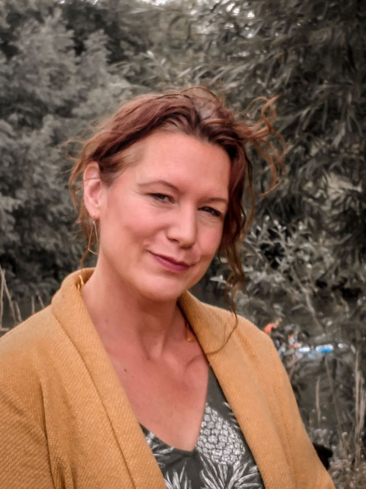

Meet Marie
Marie Stoner
Founder of Free My Thoughts — Life & Business Coaching. I help capable people move past self-doubt and take deliberate steps toward the life, career or business they truly want. My clients often already have the answers; my work is helping them unlock them.

Imposter syndrome — my specialist subject
Imposter syndrome is my specialist subject, and not only professionally. I lived with it for years before I could put a name to it — the quiet certainty that I didn't quite belong, however much the evidence said otherwise.
Naming it was the beginning; understanding it was the breakthrough. Imposter syndrome isn't a skills gap, and it isn't cured by another qualification or one more late night of over-preparing. It's an identity-level issue, held in place by old stories about who we are. Working at that level — with NLP and somatic approaches — is how I overcame it, and it's the work I've since brought to thousands of people.
If that voice is familiar to you, know this: it isn't the truth about you, and it can change. Mine did.
My development
After earning my degree in Applied Youth & Community Work, I began my career as an advocate for children and young people, campaigning to shift power and influence into their hands. My work helped shape policy and legislation that gave young people a stronger voice in their communities. At the core of everything I did was a deep belief in helping young people believe in themselves.
I coached and supported young people to build confidence, develop life skills, and take meaningful steps toward their goals — creating wellbeing, self-esteem and anger management programmes across schools, alternative education, charities and youth offending teams. This work led me to run a charity dedicated to supporting young people in their life choices, and later to manage large youth work teams. The goal was always the same: to help people build resilience, grow a positive mindset, and thrive.
Business start-up & people
Throughout my career I've supported individuals and organisations to grow with purpose and clarity — guiding entrepreneurs through business planning, vision and sustainable growth strategies, then leading transformational change programmes in the public sector and overseeing the quality of social care services.
Across the corporate and voluntary sectors, I've worked with people from all walks of life, many with complex needs. These experiences gave me a powerful insight: lasting change happens when people feel supported, heard, and connected to their sense of purpose. That realisation led me to train as a life and business coach.
Why "Free My Thoughts"?
When I qualified as a coach, I chose the name Free My Thoughts because I truly believe in the power of freeing your thinking. Real change begins when we shift how we think and feel — that's when transformation becomes possible.
I use somatic and ontological methodologies — which simply means exploring the connection between your mind, body, emotions and language. Our thoughts don't just live in our minds; they show up in how we hold ourselves, speak, react and relate to others. I also use tools from Neuro-Linguistic Programming (NLP), a practical approach to reprogramming unhelpful habits and building new ways of thinking that support your goals, confidence and sense of self.
Some of my clients come to me feeling stuck, carrying self-doubt or low self-worth. Others are looking for purpose, creativity and a fresh direction — but don't quite know how to access it yet. Coaching with me is a journey of self-exploration, clarity and change, with milestones and goals that feel meaningful and achievable for you.

I chose the swallow as the symbol for my business because it reflects the heart of coaching: new life, fresh starts, renewal, growth. Coaching can help you adapt, reconnect with yourself, and move forward with confidence.
Practical details
Location
Where I work
I'm based in Bristol and work with clients across the UK & Europe — coaching online, or face to face with local clients. I also deliver coaching workshops online and in person.
Investment
Working together
Personal coaching is £60 per 50-minute session (programmes of six or more), including support between sessions. Business engagements are tailored, from £1,600.
View investmentNext step
Discovery consultation
We begin with a complimentary 30-minute conversation to see if our coaching relationship could work — it's important you feel comfortable.
Schedule a timeLet's connect
If you're ready for change, growth and real progress, I'd love to hear from you.
Get in touch